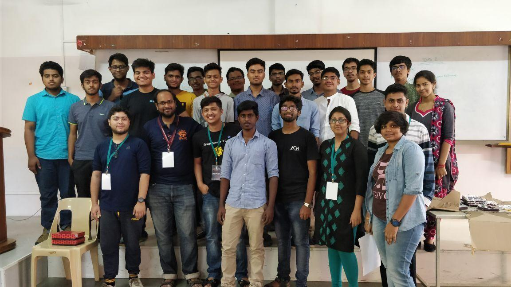

As part of Anokha Tech Fest, a 2 day FOSS workshop was hosted in Amrita School of Engineering on 22nd and 23rd of February along with a Fedora Release party on the second day. Around 50 people from various years and disciplines attended the event to learn about Linux, Open source and Fedora in general.
We had a very general agenda keeping in mind the skill level of the audience. It looked something like this :
It was a very thorough introduction to Open Source and gave everyone a birds eye overview of it.
Day 1 started off with me talking about Open Source, GNU/Linux and the details of it. Over 70% of the crowd had never used a Linux distribution before and about 40% of them had never heard of it before. It was an interesting challenge to present Linux to them and I talked about how it makes a difference.
After the talk, a lot of them wanted to try out Linux or their machines.
After my session, there was a short break. We helped a couple of really enthusiastic people dual boot their systems and helped others boot up virtual machines as it was required for the upcoming session.
Next session was taken by Vipul Siddharth, a Fedora contributor and Redhat intern. He talked about the command line and walked everyone through the bare essentials required for beginners. It was a really thorough session and I could see excited faces as they had never interacted with files on the command line before.
There was a lunch break after this session for about an hour. Post the break, I talked about Git and how it can help them with their college projects. I introduced them to the basic concepts by creating a sample repo and asking them to fork and commit changes. The advanced git session was planned for the next day. After a short Q&A session, we wrapped up the session for the day.
We started off the day with Sumantro Mukherjee recapping Day 1. He gave everyone one more quick intro to Git and dived deep into git. He covered topics like branching, sending pull requests, merging, etc. We had to constantly go around helping people as they were new to the command line and were clearly struggling. We slowed down our pace after it and made sure everyone were following us after executing every command.
After the session, Vipul talked about Ansible and how it can be used to automate mundane, redundant and repetitive tasks. We didn't have much time to do an Ansible deep dive so Vipul provided them with resources for learning and mastering the tool. He gave a very neat introduction to Ansible and there were a lot of 'Wow, you can do that?' reactions.
After the session, we had the release party. Sumantro talked about the new features in Fedora 27 and also distributed some Fedora swag we had.
Saving the best for the last, we had an awesome cake to celebrate the release!
Everyone had a bite of Fedora and were excited to begin contributing. We pointed them to Fedora Join and What Can I Do For Fedora pages to get started and also gave our contacts so that they can get in touch if they are stuck. Sumantro, Vipul and I also shared our open source story as they were having the cake for some extra motivation!
As the session concluded, Mr. Ritwik, co-convenor of the tech fest came to thank Sumantro and Vipul for conducting the session and presented them with a memento.
We quickly took feedback from the audience and posed for a quick photograph before winding it up.
